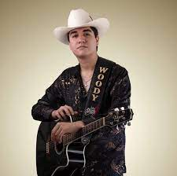
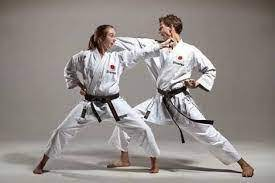
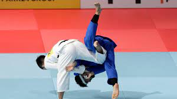

Me gusta mucho Escuchar Musica , Hacer Deportes , Hacer Bases de Datos
La Musica que escucho actualmente es La Duda
La Duda Oficial
La Agrupacion La Duda es Originaria de Guamuchil, Sinaloa.

Me gusta mucho Escuchar Musica , Hacer Deportes , Hacer Bases de Datos
La Duda Oficial
La Agrupacion La Duda es Originaria de Guamuchil, Sinaloa.
Juan Carlos Bracamontes es un cantautor y youtuber.
Ringo es un persona que requintea en el cual esta en dicha agrupacion
Ringito es un persona del staff de dicha agrupacion.

Josue es un persona integrante de dicha agrupacion. Ademas hace contenido de comida para Youtube.
Josue es un guitarrista de dicha agrupacion.
El karate es un arte marcial tradicional basada en algunos estilos de las artes marciales chinas, y en menor medida en otras disciplinas provenientes del sureste asiático proveniente de Okinawa. El nombre japonés se compone de las palabras 空 y 手. A la persona que lo practica se la llama karateca.
KARATE
El judo es un arte marcial japonés moderno creado por Jigorō Kanō. El término japonés puede traducirse como «camino de la flexibilidad», influyendo en el desarrollo físico, mental y emocional a través de la práctica. Los practicantes de este arte marcial son denominados judocas o yudocas.
JUDO
SQL es un lenguaje de computación para trabajar con conjuntos de datos y las relaciones entre ellos. Los programas de bases de datos relacionales, como Microsoft Office Access, usan SQL para trabajar con datos.

SQL
GITHUB
MI PERFIL GITHUB